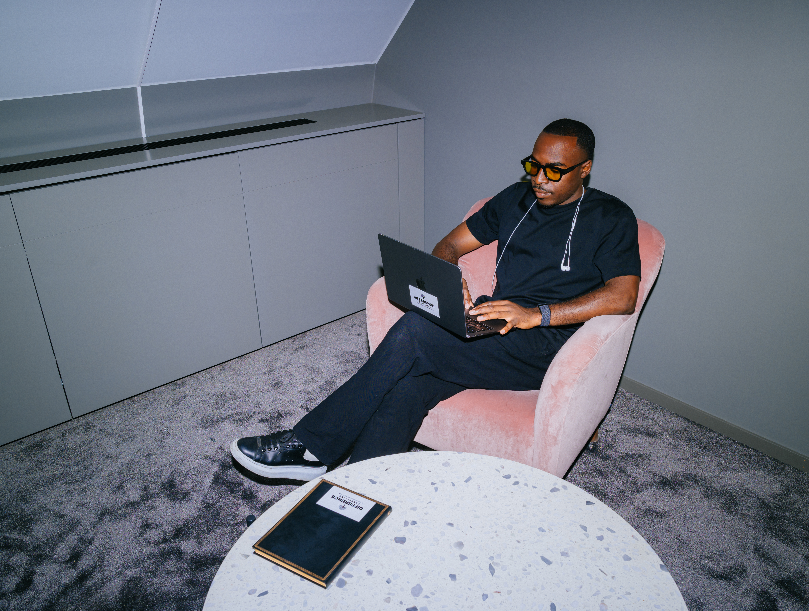
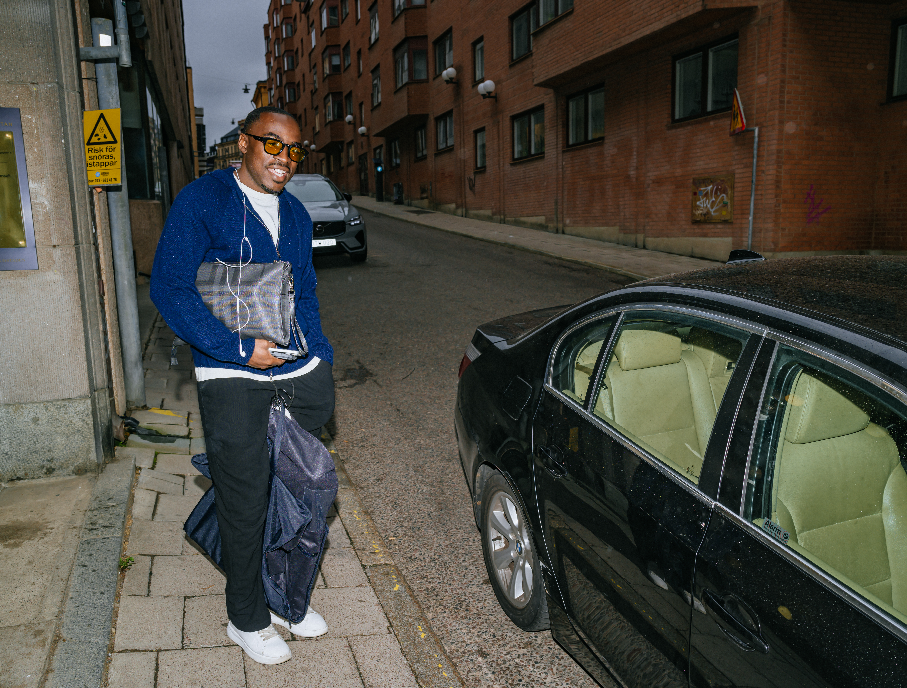

Tjänster
Samma arbete, olika vägar in.
Oavsett om ingången är en individ, en klubb eller en representant är kärnan densamma. Det som förändras är vem som initierar processen, upplägget, omfattningen och tillgången till mig.
Kärnan
Ett arbete med hur du leder dig själv i prestation.
I grunden är arbetet detsamma för alla jag möter: att se verkligheten klarare, leda sig själv under press och omsätta riktning i synligt beteende. Det bedrivs huvudsakligen som långsiktiga individuella processer.
Det finns inga färdiga paket eller priskort. I stället byggs processen efter din verklighet. Vi börjar med ett samtal, och avgör tillsammans om arbetet är rätt, och hur det i så fall ska se ut.
Tre ingångar
Inte tre olika arbeten. Samma kärna, olika ingång.

Ingång 01
Individuell process.
För spelare, tränare och andra individer som arbetar direkt med mig. En långsiktig, individuell process byggd runt din roll och din riktning.
- Ett samtal där vi avgör om arbetet är rätt för dig just nu.
- En startprofil: var perspektivet krymper och vad som styr under press.
- Återkommande sessioner med struktur, riktning och uppföljning.
- Uppföljning på konkret beteende över tid, inte på känslan för dagen.

Ingång 02
Klubb / organisation.
En klubb eller verksamhet kan ta in mig kring en eller flera individer, under en period, genom ett pilotupplägg eller ett annat avgränsat samarbete. Ett komplement till det sportsliga ledet, inte en ersättning.
- Ett första samtal med klubben där vi ringar in behov, roller och avgränsning.
- En startprofil per individ: var perspektivet krymper och vad som styr under press.
- Återkommande individuella processer, periodiserade efter fas och mål.
- Uppföljning av synligt beteende över tid, inte lösa intryck.

Ingång 03
Representant / agentur.
En agent eller representant kan initiera arbetet för en spelare eller annan individ som behöver en egen process parallellt med det övriga stödet runt personen.
- Ett samtal mellan representant och Rickson om spelarens situation och behov.
- Ett första möte med spelaren där arbetet och dess ram sätts.
- En långsiktig individuell process som följer karriärens faser.
- Löpande, förtrolig avstämning inom överenskomna ramar.
Vad arbetet kan innehålla
Struktur, inte lösa samtal.
Varje process sätts ihop individuellt. Beroende på var du befinner dig kan arbetet innehålla:
Sessioner
Återkommande samtal med tydlig struktur och riktning.
Tillgänglighet mellan sessionerna
Stöd i stunder som inte kan vänta till nästa samtal.
Individanpassat material
Verktyg, koder och underlag byggda för din verklighet.
Struktur och uppföljning
Ett tydligt fokus mellan samtalen, med punkter att stämma av mot.
Digital arbetsyta
En gemensam Drive när det är relevant, så inget tappas bort.
Kontinuerliga kvitton
Förflyttning synlig över tid, i konkret beteende, inte lösa intryck.
Vad arbetet tränar
Sex förmågor som avgör hur du presterar under press.
Ser verkligheten
Att se det som faktiskt sker, inte det du fruktar, hoppas eller är van att se.
Tolkar situationer
Att sakta ner tolkningen så att den blir vald i stället för automatisk.
Leder sig själv
Att vara lagkapten för dig själv först, med koder och principer som håller i stunden.
Agerar under press
Att stå kvar vid din standard när resultatet, känslan eller omgivningen drar iväg.
Återgår efter störning
Att komma tillbaka snabbt och medvetet efter ett misstag eller en störning.
Omsätter riktning
Att göra riktningen synlig i konkret beteende, inte bara i insikt.
Vill du utforska vilken ingång som passar? Börja med ett samtal.
Vanliga frågor